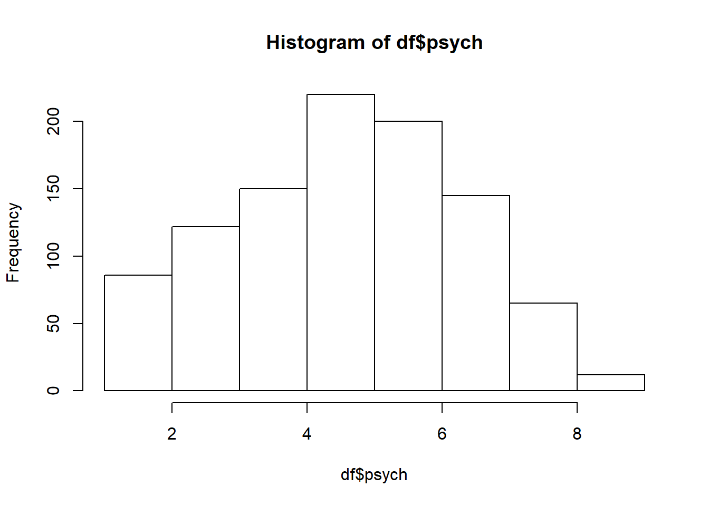

Kapitel 6 Kategorivariabler
I princip alla datamaterial innehåller kategorivariabler och finns inga sådana från början är det vanligt att på olika sätt omkoda kvantitativa variabler till kategorier. Dessutom hanteras diskreta kvantitativa variabler med få värden ofta som en kategorivariabel.
Kategorivariabler är generellt sett besvärligare att arbeta med jämfört med kvantitativa variabler. Något som kan vara förvirrande inledningsvis är att det finns två alternativ beträffande hur man väljer att arbeta med kategorivariabler, som bägge är viktiga för en dataanlytiker att hantera.
- Det går att definiera variabeln som datatypen faktor (nominal eller ordinal, dvs med eller utan ordning). Detta görs med funktionen factor(). En faktors kategorier benämns i R för levels (nivåer) och med funktionen factor() kan användaren även kan ange om nivåerna går att rangordna eller inte. Det går även att ange referensnivå samt tilldela nivåerna namn. Genom att använda datatypen faktor använder R information om kategorivariabeln i analyser. Till exempel kan namnen på olika kategorierna skrivas ut i resultat eller så man på ett enkelt sätt ändra rangordningen på kategorierna. Det går dock inte att utföra några räkneoperationer på en faktor.
- Det går att tilldela variabeln numeriska värden till de olika kategorierna, till exempel 0-1 till en variabel med två kategorier. Hur dessa värden sedan används beror på analysmetod.
Eftersom bägge varianterna har för- och nackdelar finns oftast bägge typerna av kodning för en och samma kategorivariabel i ett dataset, där kategorivariabler kodade som faktorer kallas variabelnamn_cat och numeriska kategorivariabler kallas för variabelnamn_bin om den är kodad 0-1.
Slutligen så involderar dataanalys med kategorivariabler i regel arbete med tabeller:
- Frekvenstabeller. (dvs en univariat beskrivning av en kategori-variabel)
- Korstabeller i R
- Export av tabeller till HTML (som sedan kan importeras till ordbehandlingsprogram)
6.1 Analys av binära variabeler
6.1.1 Analys av en binär variabel
Binära variabler har enbart två kategorier och det är den absolut vanligaste typen av kategorivariabel. Oavsett om en binär variabel har kategorier som inte går att rangordna (till exempel \(kön\) med kategorierna \(kvinna\) och \(man\)) eller har kategorier som går att rangordna (till exempel \(utbildning\) med kategorierna \(låg\) och \(hög\)) hanteras och analyseras en binär variabel på samma sätt. Som tidigare nämnt arbetar vi i praktiskt i R på två sätt:
- De två kategorierna i den binära variabeln tilldelas numeriska värden och variabeln analyseras sedan som en numerisk variabel. Vanligast är att ge kategorierna värdena 0 och 1. Anledningen är tolkningen blir i termer av andelar av den kategori som är kodad 1. Dessutom förenklas tolkning i sambandsanalyser, vilket vi ska komma att se senare. Exemplet nedan illustrerar.
> # Ursprungsvariabel
> education <- c("high", "high", "low", "high", "high", "low", "high", "low",
+ "low", "high", "high", "high", "high", "high", "high", "low",
+ "high", "high", "high", "high", "high", "high", "high", "high",
+ "high", "low", "high", "high", "high", "low", "high", "high",
+ "low", "high", "high", "high", "low", "low", "high", "low",
+ "high", "high", "low", "high", "high", "low", "high", "low",
+ "low", "high", "high", "high", "high", "high", "high", "low",
+ "high", "high", "high", "high", "high", "high", "high", "high",
+ "high", "low", "high", "high", "high", "low", "high", "high",
+ "low", "high", "high", "high", "low", "low", "high", "low",
+ "low","low","low","low","low","low","low","low","low","low",
+ "low","low","low","low","low","low","low","low","low","low",
+ "low","low","low","low","low","low","low","low","low","low",
+ "low","low","low","low","low","low","low","low","low","low",
+ "low","low","low","low","low","low","low","low","low","low",
+ "low","low","low","low","low","low","low","low","low","low",
+ "high", "high", "low", "high", "high", "low", "high", "low",
+ "low", "high", "high", "high", "high", "high", "high", "low",
+ "high", "high", "high", "high", "high", "high", "high", "high",
+ "high", "low", "high", "high", "high", "low", "high", "high",
+ "low", "high", "high", "high", "low", "low", "high", "low",
+ "high", "high", "low", "high", "high", "low", "high", "low",
+ "low", "high", "high", "high", "high", "high", "high", "low",
+ "high", "high", "high", "high", "high", "high", "high", "high",
+ "high", "low", "high", "high", "high", "low", "high", "high",
+ "low", "high", "high", "high", "low", "low", "high", "low",
+ "low","low","low","low","low","low","low","low","low","low",
+ "low","low","low","low","low","low","low","low","low","low",
+ "low","low","low","low","low","low","low","low","low","low",
+ "low","low","low","low","low","low","low","low","low","low",
+ "low","low","low","low","low","low","low","low","low","low",
+ "low","low","low","low","low","low","low","low","low","low")
> str(education)
> chr [1:280] "high" "high" "low" "high" "high" "low" "high" "low" "low" ...
> # Numerisk kodning: 0 = low, 1 = high
> edu_bin <- rep(NA, length(education))
> edu_bin[education == "high"] <- 1
> edu_bin[education == "low"] <- 0
> str(edu_bin)
> num [1:280] 1 1 0 1 1 0 1 0 0 1 ...
> # Numerisk kodning: 1 = low, 2 = high
> edu_12 <- rep(NA, length(education))
> edu_12[education == "high"] <- 2
> edu_12[education == "low"] <- 1
> str(edu_12)
> num [1:280] 2 2 1 2 2 1 2 1 1 2 ...
> # Beräkna medelvärdet (andelen)
> mean(edu_bin)
> [1] 0.4142857
> mean(edu_12)
> [1] 1.414286Medelvärdet när variabelns kategorier är kodade 1-2 inte är tolkningsbart på samma uppenbara sätt som vid kodningen 0-1. Med kommandot str() undersöker vi datatypen och vi ser att education är av typen character medan edu_01 och edu_12 är av datatypen numeric. Det är viktigt att undersöka datatyp, emellertid är detta ingen kod man vanligtvis sparar i scriptet. Efter datatypen är undersökt kan dessa rader tas bort.
- Den binära variabeln definieras som datatypen faktor med funktionen factor() Med argumentet levels kan vi ändra nivåerna. Vidare kan vi använda funktionen levels kan vi ändra kategorinamn. Vi nedan illusterar med R.
> # Skapa en faktorvariabel
> edu_cat <- factor(education)
> str(edu_cat)
> Factor w/ 2 levels "high","low": 1 1 2 1 1 2 1 2 2 1 ...
> summary(edu_cat)
> high low
> 116 164
> # Test att utföra en räkneoperation på en faktorvariabel
> mean(edu_cat)
> Warning in mean.default(edu_cat): argument is not numeric or logical: returning
> NA
> [1] NAVi har nu definierat en faktor-variabel med två kategorier “high” and “low”. Vi kan även se att R även tilldelat kategorierna nivåer, där “high” är level 1 och “low” är level 2. Nivåernas ordning bestäms utifrån ordning de först dyker upp i objektet såvida inte vi gör om en numerisk variabel till en faktor. Även om vi nu arbetar med en binär variabel där nominal- eller ordinalskala teoretiskt saknar betydelse, är det viktigt att se till att ordningen stämmer eftersom med sin tänkta analys eftersom ordningen påverkar analyser i R. I detta exempel är det dessutom förmodligen förvirrande för användaren att “high” har tilldelats nivå 1 medan “low” är nivå 2. Av dessa skäl ändras därför ordningen med hjälp av argumentet levels.
> # Ändra ordningen på nivåerna
> edu_cat <- factor(education, levels = c("low", "high"))
> str(edu_cat)
> Factor w/ 2 levels "low","high": 2 2 1 2 2 1 2 1 1 2 ...
> summary(edu_cat)
> low high
> 164 116
> # Gör en numerisk variabel med två värden till en faktor. Notera att nivåerna i detta fall inte bestäms
> # av ordningen i vektorn utan av de numeriska värdens storlek.
> x <- c(3, 1, 1, 3, 3)
> x_cat <- factor(x)
> str(x_cat)
> Factor w/ 2 levels "1","3": 2 1 1 2 2Avslutningsvis illustrerar vi nu att vi ändrar namn från low till L samt high till H. OBS! Nedanstående kod är inget som är uppenbart för nybörjaren och det går att mer kompakt ändra namn på kategorier i en faktor-variabel med hjälp av argumentet labels. Dock gäller det då att vara nogrann med ordningen och därför rekommenderas den kod som presenteras här. Enklast är att kopiera koden och klistra in och ändra.
> # Funktionen levels() skapar en character-vektor med namn på kategorierna
> levels(edu_cat)
> [1] "low" "high"
> # Ändra för valt element namn i vektor levels(education_cat)
> levels(edu_cat)[levels(edu_cat) == "low"] <- "L"
> levels(edu_cat)[levels(edu_cat) == "high"] <- "H"
> edu_cat
> [1] H H L H H L H L L H H H H H H L H H H H H H H H H L H H H L H H L H H H L
> [38] L H L H H L H H L H L L H H H H H H L H H H H H H H H H L H H H L H H L H
> [75] H H L L H L L L L L L L L L L L L L L L L L L L L L L L L L L L L L L L L
> [112] L L L L L L L L L L L L L L L L L L L L L L L L L L L L L H H L H H L H L
> [149] L H H H H H H L H H H H H H H H H L H H H L H H L H H H L L H L H H L H H
> [186] L H L L H H H H H H L H H H H H H H H H L H H H L H H L H H H L L H L L L
> [223] L L L L L L L L L L L L L L L L L L L L L L L L L L L L L L L L L L L L L
> [260] L L L L L L L L L L L L L L L L L L L L L
> Levels: L H6.1.2 Binära variabler med missing
Om en variabel har bortfall krävs viss försiktighet. Nedanstående kodning för att koda om high till 1 och low till 0.
> # Skapa en variabel med missing data (NA) i element 3, 10, 100
> education_mis <- education
> education_mis[3] <- NA
> education_mis[10] <- NA
> education_mis[100] <- NA
> # Numerisk kodning: 0 = low, 1 = high
> edu_bin_mis <- rep(NA, length(education_mis))
> edu_bin_mis[education_mis == "high"] <- 1
> edu_bin_mis[education_mis == "low"] <- 0
> # Genom att ta summary ser vi om det finns 3 missing i edu_bin
> summary(edu_bin_mis)
> Min. 1st Qu. Median Mean 3rd Qu. Max. NA's
> 0.0000 0.0000 0.0000 0.4152 1.0000 1.0000 3
> # Medelvärdet (andelen) beräknas med argumentet na.rm = TRUE
> mean(edu_bin_mis)
> [1] NA
> mean(edu_bin_mis, na.rm = TRUE)
> [1] 0.41516256.1.3 Analays av en binär variabel med en tabell
Den grundläggande funktionen för skapa tabeller är table(), vilken har flexibilitet att hantera både en och flera variabler. Det finns flera olika sätt att skapa tabeller i R och den avancerade användaren kan kombinera olika funktioner för att skapa exakt den avancerade tabell man har satt sig för att skapa. Många grundläggande tabeller kan dock skapas genom att skapa ett antal tabellobjekt som sedan sätts samman likt byggstenar.
Vi börjar med att titta på en mest grundläggande tabellfunktionen table(). Denna presenterar frekvenser och dessutom bortfall om vi använder argumentet useNA.
> table(edu_cat)
> edu_cat
> L H
> 164 116
> table(edu_bin)
> edu_bin
> 0 1
> 164 116
> table(edu_bin_mis)
> edu_bin_mis
> 0 1
> 162 115
> table(edu_bin_mis, useNA = "ifany")
> edu_bin_mis
> 0 1 <NA>
> 162 115 3I regel sparas tabeller i objekt. Tabell-objekt kan dock vara något omständliga att arbeta och det kan i ibland vara fördelaktigt att konvertera tabellen till en data frame för att kunna hämta element från tabellen. Se koden nedan för att undersöka skillnaden mellan tabell-objekt och data frame. När tabellen är konverterad till data frame går det använda sedvanlig metod för att ändra namn på variabler.
> freq_table_edu_cat <- table(edu_cat)
> freq_table_edu_cat
> edu_cat
> L H
> 164 116
> str(freq_table_edu_cat)
> 'table' int [1:2(1d)] 164 116
> - attr(*, "dimnames")=List of 1
> ..$ edu_cat: chr [1:2] "L" "H"
> freq_table_edu <- data.frame(freq_table_edu_cat)
> freq_table_edu
> edu_cat Freq
> 1 L 164
> 2 H 116Ofta vill man se resultat presenterade som andelar och funktionen prop.table ger oss sådana.
> # Skapa tabell med andelar från tabell-objektetet
> prop_table_edu_cat <- prop.table(freq_table_edu_cat)
> prop_table_edu_cat
> edu_cat
> L H
> 0.5857143 0.4142857
> # Kombinera frekvenser och andelar. Passa samtidigt på att avrunda och göra om variabeln till procent.
> table_edu <- cbind(freq_table_edu_cat, round(100*prop_table_edu_cat,1))
> colnames(table_edu) <- c("Frekvens", "Andel (%)")
> table_edu
> Frekvens Andel (%)
> L 164 58.6
> H 116 41.4Vi ska senare se på hur denna tabell kan exporteras.
6.1.4 Analys av två binära variabler
Vi ska nu se på hur funktionen table() kan användas för analysera samband mellan två variabler. Att titta på korstabeller är alltid ett första steg innan man genomför hypotesprövning. Skapande av korstabeller kräver också att vi funderar på hur sambandet presenteras.
I table() anges variabeln som ska finnas på raden först, sedan variabeln redovisas. Tabellen som erhålls kallas i fallet med två inkluderade variabler för tvåvägs-korstabell. Om det går att översätta variablerna i termer av oberoende variabel och beroende variabel, sätts den oberoende variabeln i regel kolumnsvis (x-axel) och den beroende variabeln radvis (y-axel). Det kan dock av utrymmesskäl finnas anledning att rucka på denna princip. Vi exemplifierar nedan med R-kod och vi ska nu beskriva sambandet mellan utbildningsnivå och rökning. Först skapas en korstabell med frekvenser och baserat på denna skapas en korstabell med relativa frekvenser baserat på kolumnprocent. Notera att det kräver en del pusslande, men vi har stor flexibilitet vad gäller den slutliga utformningen av tabellen.
> # Skapa en variabel smoker som är 1 om rökare och 0 om icke-rökare
> smoker <- c(0, 0, 1, 0, 0, 0, 0, 0, 1, 0, 1, 0, 0, 0, 0, 0, 0, 0, 0, 1,
+ 0, 1, 1, 0, 1, 0, 1, 0, 1, 0, 1, 0, 0, 0, 0, 0, 0, 0, 0, 1,
+ 0, 1, 0, 0, 1, 0, 0, 0, 1, 0, 1, 0, 0, 0, 0, 0, 0, 0, 0, 1,
+ 0, 1, 1, 0, 1, 0, 1, 0, 1, 0, 1, 0, 0, 0, 0, 0, 0, 0, 0, 1,
+ 1,1,0,0,1,1,0,0,1,1,1,1,0,0,1,1,1,1,1,1,1,1,1,1,1,1,1,0,0,0,1,1,1,1,0,0,1,
+ 1,1,1,1,0,0,0,1,0,1,0,1,1,0,0,0,1,1,1,1,0,0,1, 0, 0, 1, 0, 0, 0, 0, 0, 1, 0,
+ 1, 0, 0, 0, 0, 0, 0, 0, 0, 1, 0, 1, 1, 0, 1, 0, 1, 0, 1, 0, 1, 0, 0, 0, 0, 0, 0, 0, 0, 1,
+ 0, 1, 0, 0, 1, 0, 0, 0, 1, 0, 1, 0, 0, 0, 0, 0, 0, 0, 0, 1,
+ 0, 1, 1, 0, 1, 0, 1, 0, 1, 0, 1, 0, 0, 0, 0, 0, 0, 0, 0, 1,
+ 1,1,0,0,1,1,0,0,1,1,1,1,0,0,1,1,1,1,1,1,1,1,1,1,1,1,1,0,0,0,1,1,1,1,0,0,1,
+ 1,1,1,1,0,0,0,1,0,1,0,1,1,0,0,0,1,1,1,1,0,0,1)
> # Korstabulering av edu_bin och smoker (vi sätter rökning kolumnvis)
> freq_table_edu_smoke <- table(smoker, edu_bin)
> # Frekvenser
> freq_table_edu_smoke
> edu_bin
> smoker 0 1
> 0 76 80
> 1 88 36
> colnames(freq_table_edu_smoke) <- c("Low", "High")
> rownames(freq_table_edu_smoke) <- c("Non-smoker", "Smoker")För att använda tabellen behöver vi ordna till den. Det är svårt att analysera samband från tabeller med absoluta frekvenser, därför vi vill även se redovisat relativa frekvenser. Med funktionen prop.table() kan vi på ett enkelt sätt erhålla relativa frekvenser. Funktionen prop.table() kan tillämpas på ett objekt från table() och beräknar proportioner baserat på totala antalet (default), radvisa frekvenser eller kolumnfrekvenser. Argumentet margin används för bestämma hur andelarna i tabellen ska beräknas. Notera att det är mycket viktigt att redovisa andelar korrekt eftersom tolkningen helt beror på hur procenten är beräknade.
> # Andelar baserat alla
> table_all <- prop.table(freq_table_edu_smoke)
> table_all
> edu_bin
> smoker Low High
> Non-smoker 0.2714286 0.2857143
> Smoker 0.3142857 0.1285714
> # Procent baserat rader
> table_row_percent <- prop.table(freq_table_edu_smoke, margin = 1)
> table_row_percent
> edu_bin
> smoker Low High
> Non-smoker 0.4871795 0.5128205
> Smoker 0.7096774 0.2903226
> # Andelar baserat kolumner
> table_column_percent <- prop.table(freq_table_edu_smoke, margin = 2)
> table_column_percent
> edu_bin
> smoker Low High
> Non-smoker 0.4634146 0.6896552
> Smoker 0.5365854 0.3103448Eftersom sambandet bäst analyseras utifrån andelen rökare inom respektive utbildningskategori konstruerar vi nu en tabell med frekvenser och andelar baserat på detta samband.
> # Andelar baserat alla
> table_edu_smoke <- cbind(freq_table_edu_smoke[,1], round(100*table_column_percent[,1], 1),
+ freq_table_edu_smoke[,2], round(100*table_column_percent[,2], 1))
> table_edu_smoke
> [,1] [,2] [,3] [,4]
> Non-smoker 76 46.3 80 69
> Smoker 88 53.7 36 31
> colnames(table_edu_smoke) <- c("Low education", "%", "High education", "%")
> table_edu_smoke
> Low education % High education %
> Non-smoker 76 46.3 80 69
> Smoker 88 53.7 36 31Slutligen tittar vi på funktionen addmargins() som beräknar ger marginalerna i ett tabellobjeket. Med argumentet margins anges om alla marginaler, radmarginalen eller kolumnmargialen ska beräknas.
6.1.5 Kvantifiering och test av samband mellan två binära variabler
Det vanligaste testet för analys av korstabeller är \(\chi^2\)-test som testar om två variabler är oberoende. För att genomföra detta test i R används funktionen chisq.test(). Detta test går att genomföra oavsett skalnivå, men det finns alternativ med bättre styrka om avsikten är att testa om det finns en trend och det faktiskt finns en sådan.
# Chitvå test baserat på tabellobjektet
chisq.test(freq_table_edu_smoke)
Pearson's Chi-squared test with Yates' continuity correction
data: freq_table_edu_smoke
X-squared = 13.193, df = 1, p-value = 0.0002811
# Chitvå-test baserat på variablerna
chisq.test(edu_bin, smoker)
Pearson's Chi-squared test with Yates' continuity correction
data: edu_bin and smoker
X-squared = 13.193, df = 1, p-value = 0.0002811För att kvantifiera samband kan man använda skillnad i andelar (riskdifferens), relativa samt oddskvot.
# Chitvå test baserat på tabellobjektet
p1 <- mean( smoker[edu_bin == 1] ) # Alternativt hämta andelarna från tabellen med table_row_percent[4]
p0 <- mean( smoker[edu_bin == 0] ) # Alternativt hämta andelarna från tabellen med table_row_percent[2]
# Skillnad i andelar (riskdifferens)
rd <- p1 - p0
# kvot av andelar (relativ risk)
rr <- p1/p0
# oddskvot
or <- (p1/(1-p1)) / ((p0/(1-p0)))
rd
[1] -0.2262405
rr
[1] 0.5783699
or
[1] 0.3886364
# Kan du skapa konfidensintervall?Hur tolkar du resultatet? Vad gäller tolkning av resultat borde det kanske vara rimligt ur presentationsperspektiv att vända på analysen, dvs i vilken utsträckning ökar låg utbildning benägenheten att röka?
6.1.6 Export av tabeller
Det kan vara omständligt att exportera data från R till Word. En smidig lösning är att spara tabellerna i html-format, vilket gör tabellerna program och plattformsoberoende. Du kan sedan när manuset närmar sig att bli klart, öppna html-filen, markera allt, och klistra in. Kom ihåg att det inte är nödvändigt att lägga in tabellerna i Word förrän manuset närmar sig att bli klart.
För att exportera tabeller använder vi paketet xtable och funktionen xtable() tillsammans med funktionen print() (som finns i basversionen av R). Installera därför nödvändigt paket install.packages("xtable").
För att sedan föra in tabellerna i ordbehandlingsprogram öppnas tabellen i en webläsare, du högerklickar någonstans i webläsaren och väljer markera allt, kopiera, och klistra in.
6.2 Analys av variabler med mer än två kategorier
För att exemplifiera tittar vi på ett datamaterial.
# Skapa en population och urval
# Läs in data. Vi ska välja ut födda 1961 och födda 1975.
insark <- read.csv2("D:/conscriptiondata.csv")
# Välja ut insark för födda 1961
insark1 <- insark[insark$year == 1961,]
# Välj ut INSARK för födda 1975 -->
insark2 <- insark[insark$year == 1975,]
# Skapa ett dataset av INSARK 1961 och 1975.
insark3 <- rbind(insark1, insark2)
# Skapa nytt rad id baserat på delpopulationen 1961 och 1975
insark3$newid <- 1:length(insark3$id)
# Dra urval
n <- 1000
set.seed(12345)
df <- insark3[sample(insark3$newid, n), ] Variablen psych i INSARK mäter psykisk funktionsförmåga under stressade förhållande på en skala från från 1-9. I det inlästa datasetet är denna variabeln numerisk och värdet är satt av en psykolog. Dock kan denna variabel betraktas som en variabel på ordinalskala. Därför skapar vi en ny variabel psych_cat som R använder som ordinalskala.
För att skapa en ordinal kategorivariabel används funktionen factor() och i detta fall lägger vi till argumentet ordered = TRUE eftersom det är en kategorivariabel som går att rangordna. Kör nedanstående kod och fundera varför R ger felmeddelanden.
df$psych
> [1] 5 7 3 5 2 6 4 5 5 4 3 6 6 6 5 8 1 4 6 3 8 8 5 5 6 8 6 6 3 2 8 4 7 5 2 5 6
> [38] 9 5 2 5 6 3 4 5 7 2 6 5 5 6 7 2 4 3 5 5 2 4 7 7 5 6 3 5 3 7 6 6 2 5 5 3 3
> [75] 7 3 7 8 6 2 3 5 2 2 6 7 1 6 5 7 7 3 3 6 4 4 6 9 5 7 4 8 6 8 4 6 8 2 7 3 7
> [112] 2 6 6 4 3 6 5 7 3 3 8 5 3 5 5 6 4 5 5 5 7 5 4 6 5 2 2 7 5 4 1 5 6 9 2 3 9
> [149] 3 6 6 7 7 3 3 5 8 4 3 6 6 6 8 3 6 5 7 5 6 4 7 6 4 3 5 5 6 8 1 5 5 7 3 6 3
> [186] 3 4 3 9 5 6 6 4 5 7 3 7 7 6 6 5 7 6 6 5 7 1 5 4 3 8 6 2 7 7 5 3 5 2 7 6 4
> [223] 4 7 5 5 7 3 6 5 6 3 4 4 4 4 3 6 4 5 4 9 5 7 8 7 2 2 3 5 5 6 5 7 4 7 3 4 7
> [260] 4 6 5 4 6 5 5 5 6 2 5 2 8 5 2 6 4 8 6 6 7 5 4 5 7 6 4 2 4 6 6 6 3 4 2 3 4
> [297] 4 3 3 4 7 2 7 6 4 2 7 4 7 6 7 4 4 6 5 5 8 6 5 6 6 3 2 6 5 5 6 6 7 7 6 6 3
> [334] 5 4 3 3 1 5 6 3 4 6 5 2 5 4 5 7 6 8 3 8 3 8 7 6 5 6 6 5 8 6 7 5 8 6 5 4 4
> [371] 3 4 6 7 5 5 7 7 4 8 7 7 6 9 7 6 6 4 8 1 2 6 2 4 4 6 6 5 6 3 1 6 6 6 3 7 7
> [408] 6 6 7 5 6 3 5 5 7 5 7 3 1 5 3 6 6 6 2 8 5 4 7 7 5 5 2 5 5 6 4 3 7 8 4 3 4
> [445] 3 6 8 5 6 5 2 3 7 7 9 6 7 5 3 7 1 8 5 2 5 3 6 3 3 6 5 7 3 3 6 6 5 6 5 3 5
> [482] 5 3 4 4 6 4 3 4 3 6 4 4 5 5 3 5 4 5 7 2 7 8 3 5 6 5 6 5 6 7 6 1 7 5 6 6 4
> [519] 6 7 5 6 4 6 6 2 1 6 8 8 2 4 4 1 5 5 6 5 6 7 5 5 4 3 7 5 4 3 6 4 2 6 6 3 3
> [556] 6 9 6 5 5 5 3 8 4 7 6 5 6 7 6 5 7 6 2 5 3 3 5 5 6 6 6 8 7 5 6 5 1 5 7 7 4
> [593] 5 4 6 7 4 8 6 5 7 3 4 5 4 2 4 5 9 2 7 5 5 4 5 4 4 4 5 7 2 3 5 2 5 5 4 5 4
> [630] 8 3 3 4 7 3 5 9 5 3 4 4 7 9 2 6 4 3 2 7 3 6 5 2 8 5 1 4 5 8 7 5 5 5 5 4 5
> [667] 4 4 5 5 3 7 6 5 6 6 8 4 6 4 4 4 7 6 4 4 6 7 5 4 7 6 3 5 7 4 2 7 8 4 3 4 7
> [704] 6 6 4 3 7 4 5 6 6 8 4 8 4 7 7 8 6 3 7 3 4 5 8 8 7 6 5 2 5 3 5 6 6 7 4 5 5
> [741] 6 4 6 8 2 6 5 7 5 2 5 3 4 8 3 5 5 2 7 5 4 4 7 6 7 8 5 4 1 5 2 3 7 4 2 3 5
> [778] 6 6 8 6 2 5 7 7 8 4 7 6 5 5 2 4 3 7 7 8 6 2 3 5 4 4 4 4 6 8 5 3 2 6 6 5 7
> [815] 8 5 6 5 4 1 5 7 4 6 6 4 8 7 6 7 5 4 7 6 4 4 6 7 2 4 8 5 5 2 2 7 3 5 3 1 5
> [852] 5 4 5 7 5 4 4 4 5 3 5 7 8 7 7 7 7 6 4 6 8 4 5 5 5 5 5 7 3 5 6 7 5 5 8 3 3
> [889] 7 7 6 5 6 6 8 8 2 6 4 5 7 6 4 2 8 7 5 7 6 4 3 3 4 6 4 5 4 3 5 5 5 7 5 5 6
> [926] 5 3 8 6 3 4 3 7 7 8 7 3 6 6 4 4 5 6 2 7 5 3 6 5 6 7 6 5 6 5 7 6 4 7 7 1 3
> [963] 5 7 5 5 3 3 6 4 3 2 6 3 6 6 5 3 4 7 6 5 5 6 5 4 6 6 8 6 2 2 8 7 5 6 4 3 3
> [1000] 4
df$psych_cat <- factor(df$psych, ordered=TRUE)
mean(df$psych)
> [1] 5.062
mean(df$psych_cat)
> Warning in mean.default(df$psych_cat): argument is not numeric or logical:
> returning NA
> [1] NA
hist(df$psych) 
Naturligtvis är det på grund av att vi försöker skapa histogram och medelvärden på psych_cat som inte är en kvantitativ variabel. Titta återigen på ditt dataset. psych_cat är således kategorivariabel (factor) på ordinalskalnivå.
str(df)
> 'data.frame': 1000 obs. of 19 variables:
> $ id : int 703699 692123 702781 692870 689627 25548 393 701579 21052 2848 ...
> $ year : int 1975 1975 1975 1975 1975 1961 1961 1975 1961 1961 ...
> $ height : int 170 189 174 179 183 179 175 168 177 183 ...
> $ weight : int 69 69 60 73 74 71 60 62 69 62 ...
> $ psych : int 5 7 3 5 2 6 4 5 5 4 ...
> $ muscle : int 5 6 6 9 7 6 6 6 4 3 ...
> $ armstrength : num 392 335 404 545 451 ...
> $ physical : int 8 8 6 8 6 7 5 6 7 5 ...
> $ gripstrength: num 554 701 562 693 619 ...
> $ legstrength : num 624 601 633 791 646 ...
> $ sbp : int 118 141 106 121 130 125 124 151 140 126 ...
> $ dbp : int 77 80 63 68 61 55 55 90 78 62 ...
> $ officer : int NA 9 0 9 9 8 0 0 0 0 ...
> $ testa : int 24 35 25 18 25 27 26 30 27 30 ...
> $ testb : int 16 26 24 28 24 20 19 34 26 29 ...
> $ testc : int 5 39 18 23 28 16 12 36 20 16 ...
> $ testd : int 19 0 24 30 25 37 28 34 26 26 ...
> $ newid : int 76440 64864 75522 65611 62368 25548 393 74320 21052 2848 ...
> $ psych_cat : Ord.factor w/ 9 levels "1"<"2"<"3"<"4"<..: 5 7 3 5 2 6 4 5 5 4 ...
df$psych_cat
> [1] 5 7 3 5 2 6 4 5 5 4 3 6 6 6 5 8 1 4 6 3 8 8 5 5 6 8 6 6 3 2 8 4 7 5 2 5 6
> [38] 9 5 2 5 6 3 4 5 7 2 6 5 5 6 7 2 4 3 5 5 2 4 7 7 5 6 3 5 3 7 6 6 2 5 5 3 3
> [75] 7 3 7 8 6 2 3 5 2 2 6 7 1 6 5 7 7 3 3 6 4 4 6 9 5 7 4 8 6 8 4 6 8 2 7 3 7
> [112] 2 6 6 4 3 6 5 7 3 3 8 5 3 5 5 6 4 5 5 5 7 5 4 6 5 2 2 7 5 4 1 5 6 9 2 3 9
> [149] 3 6 6 7 7 3 3 5 8 4 3 6 6 6 8 3 6 5 7 5 6 4 7 6 4 3 5 5 6 8 1 5 5 7 3 6 3
> [186] 3 4 3 9 5 6 6 4 5 7 3 7 7 6 6 5 7 6 6 5 7 1 5 4 3 8 6 2 7 7 5 3 5 2 7 6 4
> [223] 4 7 5 5 7 3 6 5 6 3 4 4 4 4 3 6 4 5 4 9 5 7 8 7 2 2 3 5 5 6 5 7 4 7 3 4 7
> [260] 4 6 5 4 6 5 5 5 6 2 5 2 8 5 2 6 4 8 6 6 7 5 4 5 7 6 4 2 4 6 6 6 3 4 2 3 4
> [297] 4 3 3 4 7 2 7 6 4 2 7 4 7 6 7 4 4 6 5 5 8 6 5 6 6 3 2 6 5 5 6 6 7 7 6 6 3
> [334] 5 4 3 3 1 5 6 3 4 6 5 2 5 4 5 7 6 8 3 8 3 8 7 6 5 6 6 5 8 6 7 5 8 6 5 4 4
> [371] 3 4 6 7 5 5 7 7 4 8 7 7 6 9 7 6 6 4 8 1 2 6 2 4 4 6 6 5 6 3 1 6 6 6 3 7 7
> [408] 6 6 7 5 6 3 5 5 7 5 7 3 1 5 3 6 6 6 2 8 5 4 7 7 5 5 2 5 5 6 4 3 7 8 4 3 4
> [445] 3 6 8 5 6 5 2 3 7 7 9 6 7 5 3 7 1 8 5 2 5 3 6 3 3 6 5 7 3 3 6 6 5 6 5 3 5
> [482] 5 3 4 4 6 4 3 4 3 6 4 4 5 5 3 5 4 5 7 2 7 8 3 5 6 5 6 5 6 7 6 1 7 5 6 6 4
> [519] 6 7 5 6 4 6 6 2 1 6 8 8 2 4 4 1 5 5 6 5 6 7 5 5 4 3 7 5 4 3 6 4 2 6 6 3 3
> [556] 6 9 6 5 5 5 3 8 4 7 6 5 6 7 6 5 7 6 2 5 3 3 5 5 6 6 6 8 7 5 6 5 1 5 7 7 4
> [593] 5 4 6 7 4 8 6 5 7 3 4 5 4 2 4 5 9 2 7 5 5 4 5 4 4 4 5 7 2 3 5 2 5 5 4 5 4
> [630] 8 3 3 4 7 3 5 9 5 3 4 4 7 9 2 6 4 3 2 7 3 6 5 2 8 5 1 4 5 8 7 5 5 5 5 4 5
> [667] 4 4 5 5 3 7 6 5 6 6 8 4 6 4 4 4 7 6 4 4 6 7 5 4 7 6 3 5 7 4 2 7 8 4 3 4 7
> [704] 6 6 4 3 7 4 5 6 6 8 4 8 4 7 7 8 6 3 7 3 4 5 8 8 7 6 5 2 5 3 5 6 6 7 4 5 5
> [741] 6 4 6 8 2 6 5 7 5 2 5 3 4 8 3 5 5 2 7 5 4 4 7 6 7 8 5 4 1 5 2 3 7 4 2 3 5
> [778] 6 6 8 6 2 5 7 7 8 4 7 6 5 5 2 4 3 7 7 8 6 2 3 5 4 4 4 4 6 8 5 3 2 6 6 5 7
> [815] 8 5 6 5 4 1 5 7 4 6 6 4 8 7 6 7 5 4 7 6 4 4 6 7 2 4 8 5 5 2 2 7 3 5 3 1 5
> [852] 5 4 5 7 5 4 4 4 5 3 5 7 8 7 7 7 7 6 4 6 8 4 5 5 5 5 5 7 3 5 6 7 5 5 8 3 3
> [889] 7 7 6 5 6 6 8 8 2 6 4 5 7 6 4 2 8 7 5 7 6 4 3 3 4 6 4 5 4 3 5 5 5 7 5 5 6
> [926] 5 3 8 6 3 4 3 7 7 8 7 3 6 6 4 4 5 6 2 7 5 3 6 5 6 7 6 5 6 5 7 6 4 7 7 1 3
> [963] 5 7 5 5 3 3 6 4 3 2 6 3 6 6 5 3 4 7 6 5 5 6 5 4 6 6 8 6 2 2 8 7 5 6 4 3 3
> [1000] 4
> Levels: 1 < 2 < 3 < 4 < 5 < 6 < 7 < 8 < 9Om variabeln är på ordinalskalenivå. För variabeln psych_cat står Levels: 1 < 2 < 3 < 4 < 5 < 6 < 7 < 8 < 9 som indikerar hur nivåerna är rangordnade. OBS! Trots att det är siffror i variabeln hanteras inte dessa som numeriska värden. Genom att använda funktionen levels() kan vi se vilka nivåer en faktor-variabel har.
# Namn på nivåerna i faktorn psych_cat
levels(df$psych_cat)
> [1] "1" "2" "3" "4" "5" "6" "7" "8" "9"
# Ändra namn på nivåerna i psych_cat
levels(df$psych_cat)[levels(df$psych_cat)=="1"] <- "A"
levels(df$psych_cat)[levels(df$psych_cat)=="2"] <- "B"
levels(df$psych_cat)[levels(df$psych_cat)=="3"] <- "C"
levels(df$psych_cat)[levels(df$psych_cat)=="4"] <- "D"
levels(df$psych_cat)[levels(df$psych_cat)=="5"] <- "E"
levels(df$psych_cat)[levels(df$psych_cat)=="6"] <- "F"
levels(df$psych_cat)[levels(df$psych_cat)=="7"] <- "G"
levels(df$psych_cat)[levels(df$psych_cat)=="8"] <- "H"
levels(df$psych_cat)[levels(df$psych_cat)=="9"] <- "I"
levels(df$psych_cat)
> [1] "A" "B" "C" "D" "E" "F" "G" "H" "I"
str(df$psych_cat)
> Ord.factor w/ 9 levels "A"<"B"<"C"<"D"<..: 5 7 3 5 2 6 4 5 5 4 ...För att ändra rangordningen används funktionen ordered() och argumentet levels, där namnen på nivåerna placeras i en vektor som anger den rangordning nivåerna ska ha.
df$psych_cat <- ordered(df$psych_cat, levels=c("I", "H", "G", "F", "E", "D", "C", "B", "A"))
str(df$psych_cat)
> Ord.factor w/ 9 levels "I"<"H"<"G"<"F"<..: 5 3 7 5 8 4 6 5 5 6 ...I exemplet vänds rangordningen, men det går att ordna nivåerna i vilken ordning som helst.
Baserat på urvalet är nu målet att skapa frekvenstabell som innehåller både absoluta och relativa frekvenser. För att skapa tabeller används funktionerna
Baserat på urvalet är nu målet är att skapa en tabell som beskriver variabeln psych, som är bedömd psykisk funktionsförmåga som är en variabel med 9 steg, där 1 är sämst och 9 är bäst. Vi börjar med att titta på exemplet där variabeln psych används som numerisk variabel. Med funktionerna colnames() och rownames() går det att namnge kolumner och rader i tabellobjektet.
# Univariat tabell med frekvenser och proportioner
freqtable_psych <- table(df$psych)
proptable_psych <- prop.table(freqtable_psych)
table_psych <- cbind(freqtable_psych, 100*proptable_psych)
table_psych <- addmargins(table_psych, margin = 1)
colnames(table_psych) <- c("Frekvens", "%")
rownames(table_psych) <- c("Kat 1", "Kat 2", "Kat 3", "Kat 4", "Kat 5", "Kat 6", "Kat 7", "Kat 8", "Kat 9", "Total")
freqtable_psych
>
> 1 2 3 4 5 6 7 8 9
> 19 67 122 150 220 200 145 65 12
proptable_psych
>
> 1 2 3 4 5 6 7 8 9
> 0.019 0.067 0.122 0.150 0.220 0.200 0.145 0.065 0.012
table_psych
> Frekvens %
> Kat 1 19 1.9
> Kat 2 67 6.7
> Kat 3 122 12.2
> Kat 4 150 15.0
> Kat 5 220 22.0
> Kat 6 200 20.0
> Kat 7 145 14.5
> Kat 8 65 6.5
> Kat 9 12 1.2
> Total 1000 100.0Notera att tabellen med proportioner multipliceras med 100 för att få resultaten i procent. Det kan även finns anledning att avrunda resultat med funktionen round(). Antalet decimaler i avrundningen beror på behovet av precision i resultatredovisningen. Ska tabellen användas i beräkningar i R, alltså inte som en del av en rapport, bör ingen dock avrundning ske.
table_psych <- cbind(round(freqtable_psych, 0), round(100*proptable_psych), 0)
Alternativet är nu att skapa en variabel som heter psych_cat och sedan använda funktionen levels() för att ange nivåerna i faktorn. Som vanligt när vi skapar en ny variabel adderas vi den till datamaterialet.
# För att namnge raderna kan göra om psych-variabeln till en faktor som namnges.
df$psych_cat <- factor(df$psych, ordered = TRUE)
levels(df$psych_cat) = c("Kat 1", "Kat 2", "Kat 3", "Kat 4", "Kat 5", "Kat 6", "Kat 7", "Kat 8", "Kat 9")
freqtable_psych_cat <- table(df$psych_cat)
proptable_psych_cat <- prop.table(freqtable_psych_cat)
table_psych_cat <- cbind(round(freqtable_psych_cat), round(100*proptable_psych_cat, 1))
table_psych_cat <- addmargins(table_psych_cat, 1)
colnames(table_psych_cat) <- c("Frekvens", "%")
table_psych_cat
> Frekvens %
> Kat 1 19 1.9
> Kat 2 67 6.7
> Kat 3 122 12.2
> Kat 4 150 15.0
> Kat 5 220 22.0
> Kat 6 200 20.0
> Kat 7 145 14.5
> Kat 8 65 6.5
> Kat 9 12 1.2
> Sum 1000 100.0Du har nu konstruerat en frekvenstabell utifrån bägge tillvägagångsätten.
Det är viktigt vid alla dataanlyser är att veta hur funktionerna som används hanterar saknade data. Default-inställningen för table() är att ignorera sådana observationer. För att redovisa saknade data som en egen kategori används argumentet useNA = "ifany".
6.2.1 Analys av två variabler med fler än två kategorier
Vi ska nu beskriva psyskologisk bedömning uppdelat på födda 1961 respektive 1975. Först en korstabell med frekvenser och baserat på denna skapa en korstabell med relativa frekvenser baserat på kolumnprocent. Notera att det kräver en del pusslande, men vi har stor flexibilitet vad gäller att konstruera tabellen.
freqtable_psych_year <- table(df$psych, df$year)
freqtable_psych_year
1961 1975
1 10 9
2 29 38
3 64 58
4 78 72
5 112 108
6 91 109
7 55 90
8 27 38
9 6 6
proptable_psych_year <- 100*prop.table(freqtable_psych_year, margin = 2 ) # 2 är kolumnprocent
# Bind ihop frekvenser och relative frekvenser
table_psych_year_bind <- cbind(freqtable_psych_year[,1], round(proptable_psych_year[,1], 1),
freqtable_psych_year[,2], round(proptable_psych_year[,2], 1))
table_psych_year <- addmargins(table_psych_year_bind, 1)
colnames(table_psych_year) <- c("1961", "%", "1975", "%")
rownames(table_psych_year) <- c("Kat 1", "Kat 2", "Kat 3", "Kat 4", "Kat 5", "Kat 6", "Kat 7", "Kat 8", "Kat 9", "Total")
table_psych_year
1961 % 1975 %
Kat 1 10 2.1 9 1.7
Kat 2 29 6.1 38 7.2
Kat 3 64 13.6 58 11.0
Kat 4 78 16.5 72 13.6
Kat 5 112 23.7 108 20.5
Kat 6 91 19.3 109 20.6
Kat 7 55 11.7 90 17.0
Kat 8 27 5.7 38 7.2
Kat 9 6 1.3 6 1.1
Total 472 100.0 528 99.96.3 Exportera tabeller till html –>
6.4 Några frekvent förekommande tabeller
Vi ska nu presentera några tabeller som ofta förekommer, där du kan använda samma metod som ovan för att konstruera tabellerna.
6.4.1 Tabell för att beskriva urvalet
Alla rapporter eller vetenskapliga artiklar bör inkludera en beskrivning av urvalet, dvs variablerna fördelning i stickprovet. Frågan som då besvaras är ‘’Vilka är det vi vi undersöker?’’. Ibland är denna beskrivning placeread i början, ibland i en bilaga. Inom en del vetenskapliga artiklar benämns en sådan tabell Tabell 1 eller Table 1.
Observera att eftersom syftet inte är att göra inferens utan enbart att beskriva urval, dvs normallt sett redovisas inte medelfel, konfidensintervall eller \(p\)-värden.
För att skapa en sådan tabell är det enklast att i R skapa en tabell separat för kvantitativa variabler som redovisas medelvärde, standardavvikelse och evenuellt andra mått och en för kategorivariabler. Därefter kan man kombinera tabellerna i ordbehandlingsprogrammet.
# I studien krävs en variabel som indikerar högt blodtryck. -->
# För varje blodtrycksvariabel skapas 2 nya varibler till vårt dataset:
# 1. en binär 0-1 variabel som är numerisk
# 2. en binär variabel som R hanterar som en faktor med namngivna nivåer.
# Att ändra namn på faktorers nivåer är lite omständligt, men det är enkelt att använda nedanstående kod.
df$sbp_bin <- NA
df$sbp_bin[df$sbp >= 130] <- 1
df$sbp_bin[df$sbp < 130] <- 0
df$sbp_cat <- factor(df$sbp_bin)
levels(df$sbp_cat)[levels(df$sbp_cat) == "0"] <- "Normalt"
levels(df$sbp_cat)[levels(df$sbp_cat) == "1"] <- "Högt"
df$dbp_bin <- NA
df$dbp_bin[df$dbp >= 80] <- 1
df$dbp_bin[df$dbp < 80] <- 0
df$dbp_cat <- factor(df$dbp_bin) >
levels(df$dbp_cat)[levels(df$dbp_cat) == "0"] <- "Normalt"
Error in factor(df$dbp_bin) > levels(df$dbp_cat)[levels(df$dbp_cat) == : could not find function "><-"
levels(df$dbp_cat)[levels(df$dbp_cat) == "1"] <- "Högt"
Error in levels(df$dbp_cat)[levels(df$dbp_cat) == "1"] <- "Högt": attempt to set an attribute on NULL
# Skapa Tabell 1a. Kvantitativa variabler
xbar_height <- mean(df$height)
sd_height <- sd(df$height)
xbar_weight <- mean(df$weight)
sd_weight <- sd(df$weight)
xbar_sbp <- mean(df$sbp)
sd_sbp<- sd(df$sbp)
xbar_dbp <- mean(df$dbp)
sd_dbp<- sd(df$dbp)
means <- round(c(xbar_height, xbar_weight, xbar_sbp, xbar_dbp ), 1)
sds <- round(c(sd_height, sd_weight, sd_sbp, sd_dbp), 2)
table1_cont_vars <- cbind(means, sds)
colnames(table1_cont_vars) <- c("Medelvärde", "SD")
rownames(table1_cont_vars) <- c("Längd (cm)",
"Vikt (kg)",
"Systoliskt blodtryck (mmHg)",
"Diastoliskt blodtryck (mmHg)")
# Skapa Tabell 1b. Kategorivariabler -->
desc_sbp_bin <- cbind(table(df$sbp_bin), 100*prop.table(table(df$sbp_bin)))
desc_dbp_bin <- cbind(table(df$dbp_bin), 100*prop.table(table(df$dbp_bin)))
desc_psych_cat <- cbind(table(df$psych), 100*prop.table(table(df$psych)))
table1_cat_vars <- rbind(desc_sbp_bin, desc_dbp_bin, desc_psych_cat)
colnames(table1_cat_vars) <- c("Antal", "%")
rownames(table1_cat_vars) <- c("Systoliskt blodtryck (mmHG < 130)",
"Systoliskt blodtryck (mmHG >= 130)",
"Diastoliskt blodtryck (mmHG < 80)",
"Diastoliskt blodtryck (mmHG >= 80)",
"Psykologisk bedömning: Kat 1",
"Psykologisk bedömning: Kat 2",
"Psykologisk bedömning: Kat 3",
"Psykologisk bedömning: Kat 4",
"Psykologisk bedömning: Kat 5",
"Psykologisk bedömning: Kat 6",
"Psykologisk bedömning: Kat 7",
"Psykologisk bedömning: Kat 8",
"Psykologisk bedömning: Kat 9") I R ser tabellerna ut som följer.
table1_cont_vars
Medelvärde SD
Längd (cm) 179.3 6.58
Vikt (kg) 70.5 10.68
Systoliskt blodtryck (mmHg) 128.6 10.98
Diastoliskt blodtryck (mmHg) 66.9 9.83
table1_cat_vars
Antal %
Systoliskt blodtryck (mmHG < 130) 519 51.9
Systoliskt blodtryck (mmHG >= 130) 481 48.1
Diastoliskt blodtryck (mmHG < 80) 900 90.0
Diastoliskt blodtryck (mmHG >= 80) 100 10.0
Psykologisk bedömning: Kat 1 19 1.9
Psykologisk bedömning: Kat 2 67 6.7
Psykologisk bedömning: Kat 3 122 12.2
Psykologisk bedömning: Kat 4 150 15.0
Psykologisk bedömning: Kat 5 220 22.0
Psykologisk bedömning: Kat 6 200 20.0
Psykologisk bedömning: Kat 7 145 14.5
Psykologisk bedömning: Kat 8 65 6.5
Psykologisk bedömning: Kat 9 12 1.2För exportera använder du som förut paketet xtable.